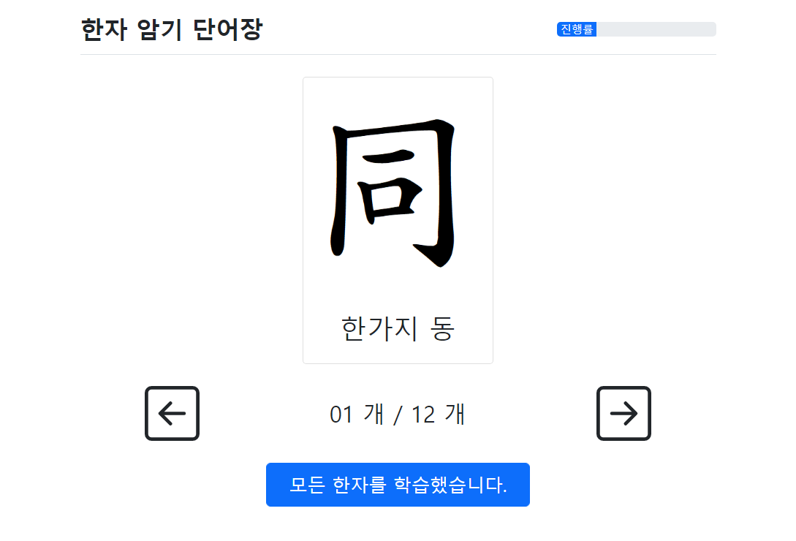
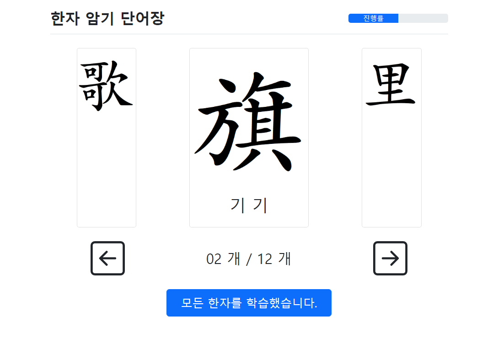
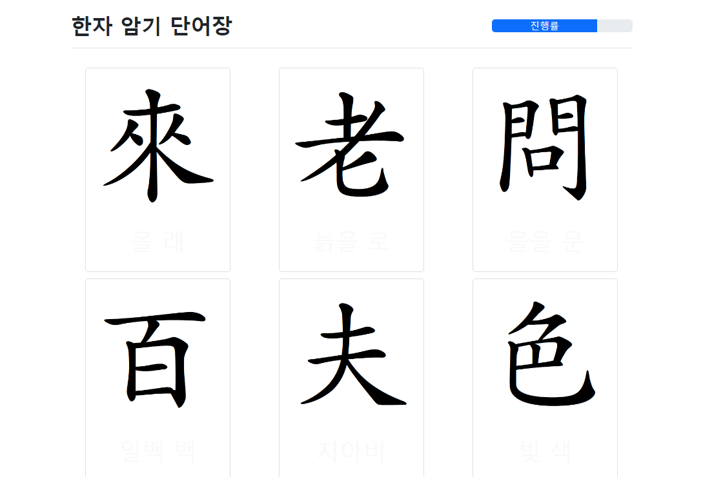

한자 암기 단어장
진행률
세 단어장을 모두 테스트하셨습니다.
간단한 설문에 참여해주시면 프로젝트에 큰 도움이 됩니다.
1. 참여하신 분의 연령대를 선택해주세요.
10대
20대
30대
40대
50대 이상
2. 각 단어장 방법을 1~5점으로 평가해주세요.
첫번째 방법

1점
5점
두번째 방법

1점
5점
세번째 방법

1점
5점
3. 세 방법 중 가장 좋았던 방법과 이유,
그 외 느낀점이 있으면 자유롭게 써주세요. (선택사항)
제출하기